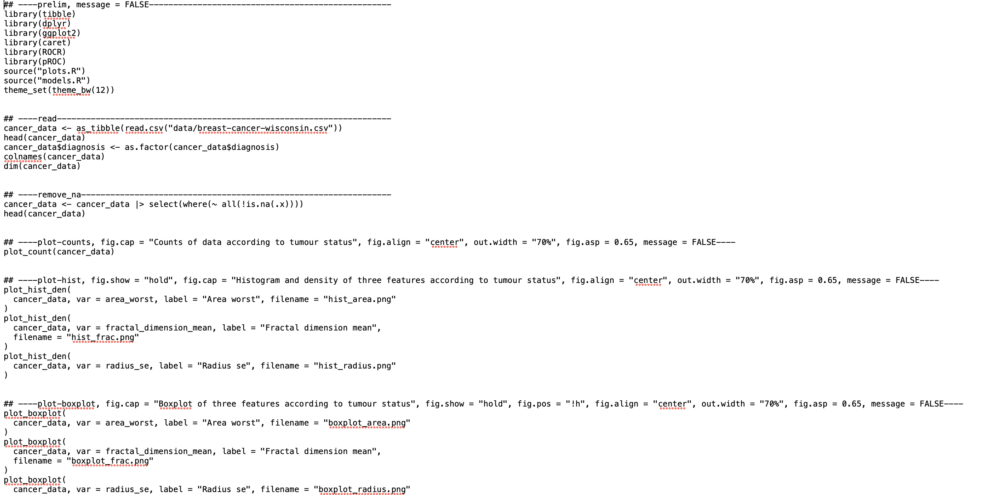
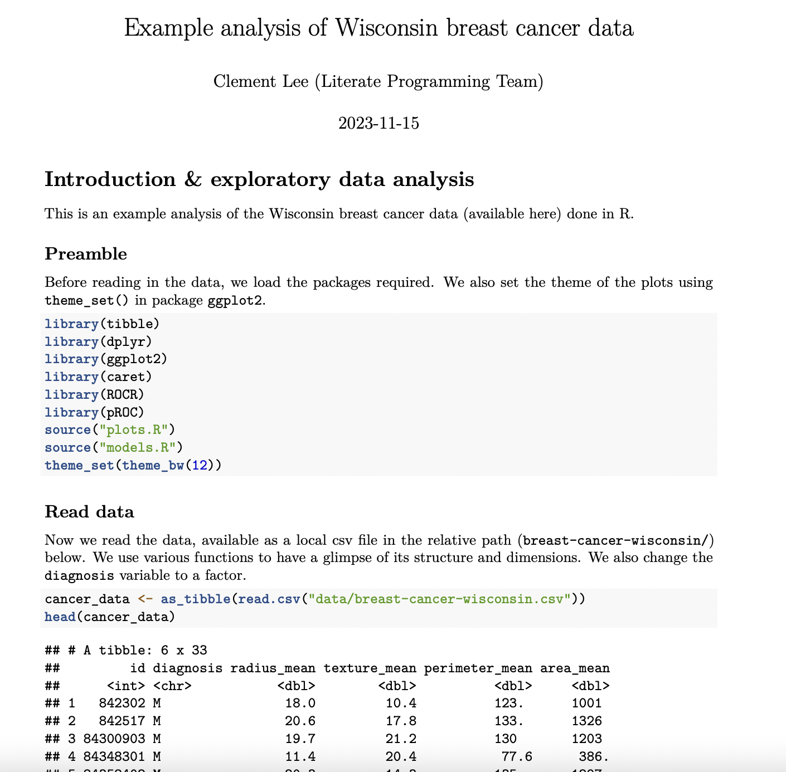

1. The concepts and goals of Literate Programming
1.1 What is Literate programming?
The expression “Literate programming” was coined in 1984 by the Mathematician, Computer Scientist and Professor Emeritus at Stanford University Donald Knuth.

It involves an explanation of how a program works in a natural language as opposed to the syntax of a formal programming language (Like R & Python).
Another contribution made to this field by Knuth is the TeX mathematical typsetting language that can be used to insert production quality mathematical formulae into documents using panin text ASCII characters - it is used in the freely available LaTeX software.
Example LaTeX code
The quadratic formula is $-b \pm \sqrt{b^2 - 4ac} \over 2a$
The quadratic formula is \({-b \pm \sqrt{b^2 - 4ac} \over 2a}\)
1.2 Why do we need Literate programming?
Have you ever considered how a computer “reads” its instructions? At the silicon level (Machine code) the language is purely binary numbers i.e. 1s and 0s and comprise of extremely mechanistic operations e.g. roll bits to left. This is not very intuitive to humans so when we write computer programs we tend to write them in high-level languages like R & Python which are a very structured, very natural form of English.
They are written to be read and understood by Humans. In fact, other programs (interpreters and compilers are necessary for the computer to actually make sense of our code. Since this form of the code is clearly designed to be read by humans, it is emminently sensible to make the logical goals of the program equally readasble by humans.
Like any other form of scientific communication (Papers, Posters or Lectures) an anlysis script or program is a narration of a scientific story. Use of Literate programming enables us to annotate the programs code with meaningful insights into the assumptions, considerations and decisions involved in the analyssis of the data. Which, in turn, leads to more unerstandable and reproducible research.
recur_fact <- function(n) {
if(n <= 1) {
return(1) }
else {
return(n * recur_fact(n-1)) }
}
recur_fact(5)
Exercise in Literate Programming thinking
Above is some example code - try describing what it does and how it is calculated as if you were
explaining it to a non-programmer
Solution
This is an example of some R code that calculates the factorial of n by the process of recursion such that: \({n! = n \times (n-1) \times \dots \times 1}\)
(and yes it is possible to write equations in LaTex in some Literate programming documents!)
1.3 How can we implement Literate programming?
We could choose to annotate our code in many ways. Programming languages both feature and encourage the use of comments in coding. Whilst these are adequate for discussing the program in terms of the feature-set of the programming language, they are lacking in the ability to provide rich formatted dialogue with emphasus styles such as bold and italics or to incorporate images and diagrams. Similarly, the code and it’s outputs remain distinct and seperate entities.
So what would help us is a language that can have the code and its outputs embedded in our exposition of the analysis. This should be written in a form aimed at humans not computers and spporting rich formatting similar to a word-processed document.
In this course, one of the key deliverables is for you to gain familiarity with a language called Markdown. This is a very simple language that enables you to code formatted text using a simple ASCII text editor and in appropriate Integrated Design Environments (IDEs) like PyCharm, Quarto,Jupyter Notebooks and Rstudio allow you to intersperse foramtted text blocks with computer code chunks and practically implement the concept of literate programming.
Another deliverable of this course will be to also provide an introduction to at least one of these IDEs and how they support you in carrying out literate programming.
There will be a practical implementation of literate programming where we will transform a plain script into an annotated, rich markdown implementation that retains the functionality of the computational workflow but additionally narrates the concepts of said workflow.
Ranking desirable features in a Literate Programming tool
Discuss/Rank these with 1 = most important to 4 = least important:
a) Inclusion of program outputs
b) Ability to view/edit in any plain text editor
c) (Progamming)Language-agnostic
d) Ability to be exported to other formats (e.g. PDF, Word & HTML web-pages)
Solution
The point of this exercise was to get you to think about the benefits of a Literate Programming tool. In fact, all of these are pretty important (Especially with respec t to reproducibility). As you proceed through the course, please assess what we teach you with respect to the features mentioned in this question.
1.4 How do we get there from here?
The next sessions of this course will equip you with core knowledge of Markdown (and more specifically RMarkdown and fam,iliarise you with some software tools to enable you to go from code like this:

